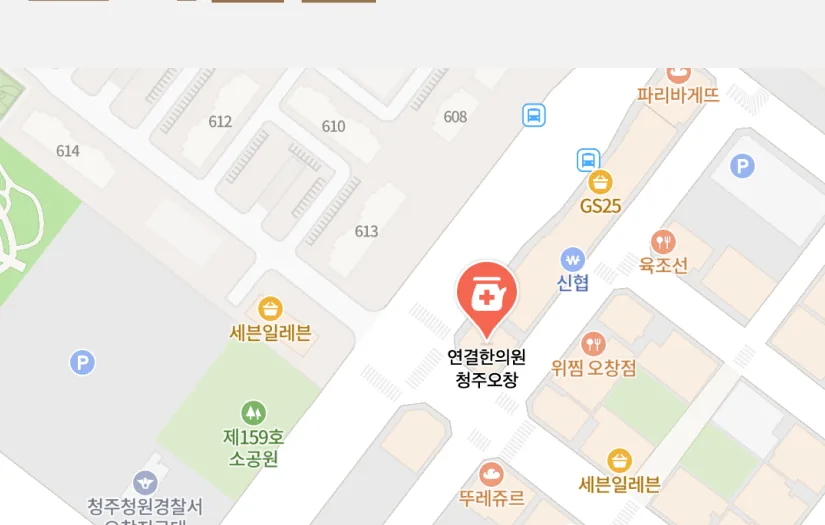
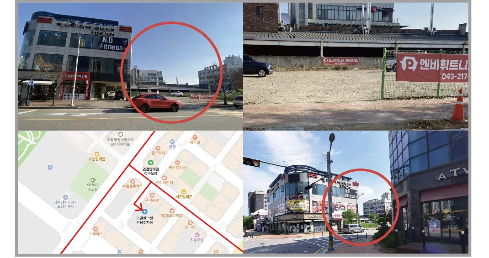
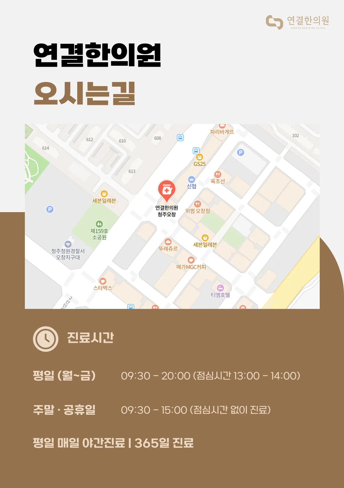
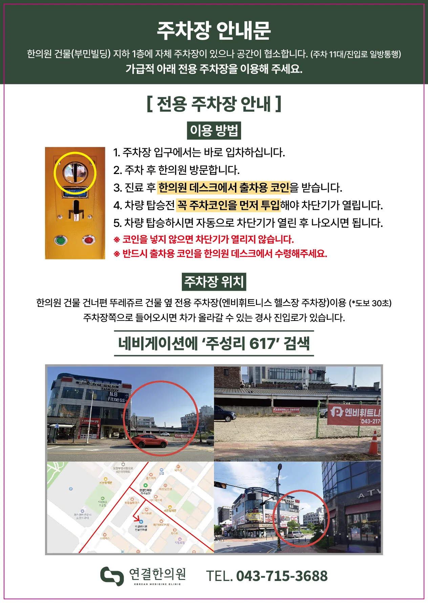

오시는 길
위치 안내
충북 청주시 청원구 오창읍 2산단로 132, 301·302호 (3층) · 부영6단지 정문 건너편 · 부민빌딩 3층

신협·GS25 옆 블록, 청주청원경찰서 오창지구대·제159호 소공원 맞은편 · 지도를 누르면 네이버 지도로 이동합니다

연결한의원 청주오창
충북 청주시 청원구 오창읍 2산단로 132, 301·302호 (3층)
지번: 충북 청주시 청원구 오창읍 주성리 577 · 부영6단지 정문 건너편 · 부민빌딩 3층
진료시간
- 평일 (월~금)09:30 – 20:00점심시간 13:00 – 14:00
- 토·일·공휴일09:30 – 15:00점심시간 없이 진료
평일은 저녁 8시까지 진료해 퇴근 후에도 방문하실 수 있고, 토·일요일·공휴일에도 오전 9시 30분부터 오후 3시까지 점심시간 없이 진료합니다. 365일 진료합니다.
차량·주차 안내
한의원 건물(부민빌딩) 지하 1층에 자체 주차장이 있으나 공간이 협소합니다(주차 11대 / 진입로 일방통행). 가급적 아래 전용 주차장을 이용해 주세요.
전용 주차장 위치 — 내비게이션에 ‘주성리 617’ 검색
한의원 건물 건너편 뚜레쥬르 건물 옆 전용 주차장(엔비휘트니스 헬스장 주차장, 도보 30초). 주차장 쪽으로 들어오시면 차가 올라갈 수 있는 경사 진입로가 있습니다.
- 주차장 입구에서는 바로 입차하십니다.
- 주차 후 한의원을 방문합니다.
- 진료 후 한의원 데스크에서 출차용 코인을 받습니다.
- 차량 탑승 전 꼭 주차코인을 먼저 투입해야 차단기가 열립니다.
- 차량 탑승하시면 자동으로 차단기가 열린 후 나오시면 됩니다.
※ 코인을 넣지 않으면 차단기가 열리지 않습니다. 반드시 출차용 코인을 한의원 데스크에서 수령해 주세요.
Guide
원내 안내문

